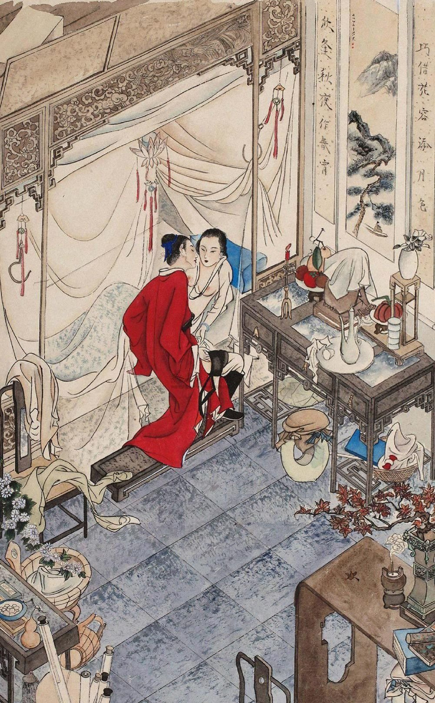

第十三回 李瓶姐墙头密约 迎春儿隙底私窥
第十三回 李瓶姐墙头密约 迎春儿隙底私窥#
词曰：
绣面芙蓉一笑开，斜飞宝鸭衬香腮。眼波才动被人猜。
一面风情深有韵，半笺娇恨寄幽怀。月移花影约重来。
话说一日西门庆往前边走来，到月娘房中。月娘告说：“今日花家使小厮拿帖来，请你吃酒。”西门庆观看帖子，写着：“即午院中吴银家一叙，希即过我同往，万万！”少顷，打选衣帽，叫了两个跟随，骑匹骏马，先迳到花家。不想花子虚不在家了。他浑家李瓶儿，夏月间戴着银丝鬏髻，金镶紫瑛坠子，藕丝对衿衫，白纱挑线镶边裙，裙边露一对红鸳凤嘴尖尖趫趫小脚，立在二门里台基上。那西门庆三不知走进门，两下撞了个满怀。这西门庆留心已久，虽故庄上见了一面，不曾细玩。今日对面见了，见他生的甚是白净，五短身才，瓜子面儿，细湾湾两道眉儿，不觉魂飞天外，忙向前深深作揖。妇人还了万福，转身入后边去了。使出一个头发齐眉的丫鬟来，名唤绣春，请西门庆客位内坐。他便立在角门首，半露娇容说：“大官人少坐一时。他适才有些小事出去了，便来也。”丫鬟拿出一盏茶来，西门庆吃了。妇人隔门说道：“今日他请大官人往那边吃酒去，好歹看奴之面，劝他早些回家。两个小厮又都跟去了，止是这两个丫鬟和奴，家中无人。”西门庆便道：“嫂子见得有理，哥家事要紧。嫂子既然吩咐在下，在下一定伴哥同去同来。”
正说着，只见花子虚来家，妇人便回房去了。花子虚见西门庆叙礼说道：“蒙哥下降，小弟适有些不得已小事出去，失迎，恕罪！”于是分宾主坐下，便叫小厮看茶。须臾，茶罢。又吩咐小厮：“对你娘说，看菜儿来，我和西门爹吃三杯起身。今日六月二十四，是院内吴银姐生日，请哥同往一乐。”西门庆道：“二哥何不早说？”即令玳安：“快家去，讨五钱银子封了来。”花子虚道：“哥何故又费心？小弟到不是了。”西门庆见左右放桌儿，说道：“不消坐了，咱往里边吃去罢。”花子虚道：“不敢久留，哥略坐一回。”少倾，就是齐整肴馔拿将上来，银高脚葵花钟，每人三钟，又是四个卷饼，吃毕收下来与马上人吃。
少倾，玳安取了分资来，一同起身上马，迳往吴四妈家与吴银儿做生日。到那里，花攒锦簇，歌舞吹弹，饮酒至一更时分方散。西门庆留心，把子虚灌得酩酊大醉。又因李瓶儿央浼之言，相伴他一同来家。小厮叫开大门，扶到他客位坐下。李瓶儿同丫鬟掌着灯烛出来，把子虚搀扶进去。
西门庆交付明白，就要告回。妇人旋走出来，拜谢西门庆，说道：“拙夫不才贪酒，多累看奴薄面，姑待来家，官人休要笑话。”那西门庆忙屈身还喏，说道：“不敢。嫂子这里吩咐，在下敢不铭心刻骨，同哥一搭里来家！非独嫂子耽心，显的在下干事不的了。方才哥在他家，被那些人缠住了，我强着催哥起身。走到乐星堂儿门首粉头郑爱香儿家，──小名叫做郑观音，生的一表人物，哥就要往他家去，被我再三拦住，劝他说道：‘恐怕家中嫂子放心不下。’方才一直来家。若到郑家，便有一夜不来。嫂子在上，不该我说，哥也糊涂，嫂子又青年，偌大家室，如何就丢了，成夜不在家？是何道理！”妇人道：“正是如此，奴为他这等在外胡行，不听人说，奴也气了一身病痛在这里。往后大官人但遇他在院中，好歹看奴薄面，劝他早早回家。奴恩有重报，不敢有忘。”这西门庆是头上打一下脚底板响的人，积年风月中走，甚么事儿不知道？今日妇人到明明开了一条大路，教他入港，岂不省腔！于是满面堆笑道：“嫂子说那里话！相交朋友做甚么？我一定苦心谏哥，嫂子放心。”妇人又道了万福，又叫小丫鬟拿了一盏果仁泡茶来。西门庆吃毕茶，说道：“我回去罢，嫂子仔细门户。”遂告辞归家。
自此西门庆就安心设计，图谋这妇人，屡屡安下应伯爵、谢希大这伙人，把子虚挂住在院里饮酒过夜。他便脱身来家，一径在门首站立。这妇人亦常领着两个丫鬟在门首。西门庆看见了，便扬声咳嗽，一回走过东来，又往西去，或在对门站立，把眼不住望门里睃盼。妇人影身在门里，见他来便闪进里面，见他过去了，又探头去瞧。两个眼意心期，已在不言之表。一日，西门庆正站在门首，忽见小丫鬟绣春来请。西门庆故意问道：“姐姐请我做甚么？你爹在家里不在？”绣春道：“俺爹不在家，娘请西门庆爹问句话儿。”这西门庆得不的一声，连忙走过来，到客位内坐下。良久，妇人出来，道了万福，便道：“前日多承官人厚意，奴铭刻于心，知感不尽。他从昨日出去，一连两日不来家了，不知官人曾会见他来不曾？”西门庆道：“他昨日同三四个在郑家吃酒，我偶然有些小事就来了。今日我不曾得进去，不知他还在那里没在。若是我在那里，恐怕嫂子忧心，有个不催促哥早早来家的？”妇人道：“正是这般说。奴吃煞他不听人说、在外边眠花卧柳不顾家事的亏。”西门庆道：“论起哥来，仁义上也好，只是有这一件儿。”说着，小丫鬟拿茶来吃了。西门庆恐子虚来家，不敢久恋，就要告归。妇人又千叮万嘱，央西门庆：“不拘到那里，好歹劝他早来家，奴一定恩有重报，决不敢忘官人！”西门庆道：“嫂子没的说，我与哥是那样相交！”说毕，西门庆家去了。
到次日，花子虚自院中回家，妇人再三埋怨说道：“你在外边贪酒恋色，多亏隔壁西门大官人，两次三番顾睦你来家。你买分礼儿谢谢他，方不失了人情。”那花子虚连忙买了四盒礼物，一坛酒，使小厮天福儿送到西门庆家。西门庆收下，厚赏来人去了。吴月娘便问说：“花家如何送你这礼？”西门庆道：“花二哥前日请我们在院中与吴银儿做生日，醉了，被我搀扶了他来家；又见常时院中劝他休过夜，早早来家。他娘子儿因此感我的情，想对花二哥说，故买此礼来谢我。”吴月娘听了，与他打个问讯，说道：“我的哥哥，你自顾了你罢，又泥佛劝土佛！你也成日不着个家，在外养女调妇，反劝人家汉子！”又道：“你莫不白受他这礼？”因问：“他帖上儿写着谁的名字？若是他娘子的名字，今日写我的帖儿，请他娘子过来坐坐，他也只恁要来咱家走走哩。若是他男子汉名字，随你请不请，我不管你。”西门庆道：“是花二哥名字，我明日请他便了。”次日，西门庆果然治酒，请过花子虚来，吃了一日酒。归家，李瓶儿说：“你不要差了礼数。咱送了他一分礼，他到请你过去吃了一席酒，你改日还该治一席酒请他，只当回席。”
光阴迅速，又早九月重阳。花子虚假着节下，叫了两个妓者，具柬请西门庆过来赏菊。又邀应伯爵、谢希大、祝实念、孙天化四人相陪。传花击鼓，欢乐饮酒。有诗为证：
乌兔循环似箭忙，人间佳节又重阳。千枝红树妆秋色，三径黄花吐异香。
不见登高乌帽客，还思捧酒绮罗娘。秀帘琐闼私相觑，从此恩情两不忘。
当日，众人饮酒到掌灯之后，西门庆忽下席来外边解手。不防李瓶儿正在遮槅子边站立偷觑，两个撞了个满怀，西门庆回避不及。妇人走到西角门首，暗暗使绣春黑影里走到西门庆跟前，低声说道：“俺娘使我对西门爹说，少吃酒，早早回家。晚夕，娘如此这般要和西门爹说话哩。”西门庆听了，欢喜不尽。小解回来，到席上连酒也不吃，唱的左右弹唱递酒，只是装醉不吃。看看到一更时分，那李瓶儿不住走来廉外，见西门庆坐在上面，只推做打盹。那应伯爵、谢希大，如同钉在椅子上，白不起身。熬的祝实念、孙寡嘴也去了，他两个还不动。把个李瓶儿急的要不的。西门庆已是走出来，被花子虚再不放，说道：“今日小弟没敬心，哥怎的白不肯坐？”西门庆道：“我本醉了，吃不去。”于是故意东倒西歪，教两个扶归家去了。应伯爵道：“他今日不知怎的，白不肯吃酒，吃了不多酒就醉了。既是东家费心，难为两个姐儿在此，拿大钟来，咱每再周四五十轮，散了罢。”李瓶儿在帘外听见，骂“涎脸的囚根子”不绝。暗暗使小厮天喜儿请下花子虚来，吩咐说：“你既要与这伙人吃，趁早与我院里吃去。休要在家里聒噪。我半夜三更，熬油费火，我那里耐烦！”花子虚道：“这咱晚我就和他们院里去，也是来家不成，你休再麻犯我。”妇人道：“你去，我不麻犯便了。”这花子虚得不的这一声，走来对众人说：“我们往院里去。”应伯爵道：“真个？休哄我。你去问声嫂子来，咱好起身。”子虚道：“房下刚才已是说了，教我明日来家。”谢希大道：“可是来，自吃应花子这等唠叨。哥刚才已是讨了老脚来，咱去的也放心。”于是连两个唱的，都一齐起身进院。此时已是二更天气，天福儿、天喜儿跟花子虚等三人，从新又到后巷吴银儿家去吃酒不题。
单表西门庆推醉到家，走到金莲房里，刚脱了衣裳，就往前边花园里去坐，单等李瓶儿那边请他。良久，只听得那边赶狗关门。少倾，只见丫鬟迎春黑影影里扒着墙，推叫猫，看见西门庆坐在亭子上，递了话。这西门庆就掇过一张桌凳来踏着，暗暗扒过墙来，这边已安下梯子。李瓶儿打发子虚去了，已是摘了冠儿，乱挽乌云，素体浓妆，立在穿廊下。看见西门庆过来，欢喜无尽，忙迎接进房中。灯烛下，早已安排一桌齐整酒肴果菜，壶内满贮香醪。妇人双手高擎玉斝，亲递与西门庆，深深道个万福：“奴一向感谢官人，蒙官人又费心酬答，使奴家心下不安。今日奴自治了这杯淡酒，请官人过来，聊尽奴一点薄情。又撞着两个天杀的涎脸，只顾坐住了，急的奴要不的。刚才吃我都打发到院里去了。”西门庆道：“只怕二哥还来家么？”妇人道：“奴已吩咐过夜不来了。两个小厮都跟去了。家里再无一人，只是这两个丫头，一个冯妈妈看门首，他是奴从小儿养娘心腹人。前后门都已关闭了。”西门庆听了，心中甚喜。两个于是并肩叠股，交杯换盏，饮酒做一处。迎春旁边斟酒，绣春往来拿菜儿。吃得酒浓时，锦帐中香熏鸳被，设放珊瑚，两个丫鬟撤开酒桌，拽上门去了。两人上床交欢。
原来大人家有两层窗寮，外面为窗，里面为寮。妇人打发丫鬟出去，关上里面两扇窗寮，房中掌着灯烛，外边通看不见。这迎春丫头，今年已十七岁，颇知事体，见他两个今夜偷期，悄悄向窗下，用头上簪子挺签破窗寮上纸，往里窥觑。端的二人怎样交接？但见：
灯光影里，鲛绡帐中，一个玉臂忙摇，一个金莲高举。一个莺声呖呖，一个燕语喃喃。好似君瑞遇莺娘，犹若宋玉偷神女。山盟海誓，依稀耳中；蝶恋蜂恣，未能即罢。正是：被翻红浪，灵犀一点透酥胸；帐挽银钩，眉黛两弯垂玉脸。

房中二人云雨，不料迎春在窗外，听看得明明白白。听见西门庆问妇人多少青春。李瓶儿道：“奴今年二十三岁。”因问：“他大娘贵庚？”西门庆道：“房下二十六岁了。”妇人道：“原来长奴三岁，到明日买分礼儿过去，看看大娘，只怕不好亲近。”西门庆道：“房下自来好性儿。”妇人又问：“你头里过这边来，他大娘知道不知？倘或问你时，你怎生回答？”西门庆道：“俺房下都在后边第四层房子里，惟有我第五个小妾潘氏，在这前边花园内，独自一所楼房居住，他不敢管我。”妇人道：“他五娘贵庚多少？”西门庆道：“他与大房下同年。”妇人道：“又好了，若不嫌奴有玷，奴就拜他五娘做个姐姐罢。到明日，讨他大娘和五娘的脚样儿来，奴亲自做两双鞋儿过去，以表奴情。”说着，又将头上关顶的金簪儿拨下两根来，替西门庆带在头上，说道：“若在院里，休要叫花子虚看见。”西门庆道：“这理会得。”当下二人如胶似漆，盘桓到五更时分。窗外鸡叫，东方渐白，西门庆恐怕子虚来家，整衣而起，照前越墙而过。两个约定暗号儿，但子虚不在家，这边就使丫鬟在墙头上暗暗以咳嗽为号，或先丢块瓦儿，见这边无人，方才上墙，这边西门庆便用梯凳扒过墙来。两个隔墙酬和，窃玉偷香，不由大门行走，街房邻舍怎的晓得？有诗为证：
月落花阴夜漏长，相逢疑是梦高唐。夜深偷把银缸照，犹恐憨奴瞰隙光。
却说西门庆扒过墙来，走到潘金莲房里。金莲还睡未起，因问：“你昨日也不知又往那里去了这一夜？也不对奴说一声儿。”西门庆道：“花二哥又使小厮邀我往院里去，吃了半夜酒，才脱身走来家。”金莲虽故信了，还有几分疑影在心。一日，同孟玉楼饭后在花园亭子上做针指，猛可见一块瓦儿打在面前。那孟玉楼低着头纳鞋，没看见。这潘金莲单单把眼四下观看，影影绰绰只见隔壁墙头上一个白面探了一探，就下去了。金莲忙推玉楼，指与他瞧，说道：“三姐姐，你看这个，是隔壁花家那大丫头，想是上墙瞧花儿，看见俺们在这里，他就下去了。”说毕，也就罢了。到晚夕，西门庆自外赴席来家，进金莲房中。金莲与他接了衣裳，问他。饭不吃，茶也不吃，趔趄着脚儿，只往前边花园里走。这潘金莲贼留心，暗暗看着他。坐了好一回，只见先头那丫头在墙头上打了个照面，这西门庆就踏着梯凳过墙去了。那边李瓶儿接入房中，两个厮会不题。
这潘金莲归到房中，翻来复去，通一夜不曾睡。将到天明，只见西门庆过来，推开房门，妇人睡在床上，不理他。那西门庆先带几分愧色，挨近他床上坐下。妇人见他来，跳起来坐着，一手撮着他耳朵，骂道：“好负心的贼！你昨日端的那里去来？把老娘气了一夜！你原来干的那茧儿，我已是晓得不耐烦了！趁早实说，从前已往，与隔壁花家那淫妇偷了几遭？一一说出来，我便罢休。但瞒着一字儿，到明日你前脚儿过去，后脚我就吆喝起来，教你负心的囚根子死无葬身之地！你安下人标住他汉子在院里过夜，却这里要他老婆。我教你吃不了包着走！嗔道昨日大白日里，我和孟三姐在花园里做生活，只见他家那大丫头在墙那边探头舒脑的，原来是那淫妇使的勾使鬼来勾你来了。你还哄我老娘！前日他家那忘八，半夜叫了你往院里去，原来他家就是院里！”西门庆听了，慌的装矮子，只跌脚跪在地下，笑嘻嘻央及说道：“怪小油嘴儿，禁声些！实不瞒你，他如此这般问了你两个的年纪，到明日讨了鞋样去，每人替你做双鞋儿，要拜认你两个做姐姐，他情愿做妹子。”金莲道：“我是不要那淫妇认甚哥哥姐姐的。他要了人家汉子，又来献小殷勤儿，我老娘眼里是放不下砂子的人，肯叫你在我跟前弄了鬼儿去！”说着一只手把他裤子扯开，只见那话软仃当，银托子还带在上面，问道：“你实说，与淫妇弄了几遭？”西门庆道：“弄到有数儿的，只一遭。”妇人道：“你赌个誓，一遭就弄的他恁软如鼻涕浓如酱，却如风瘫了一般的！有些硬朗气儿也是人心。”说着把托子一揪，挂下来，骂道：“没羞的强盗，嗔道教我那里没寻，原来把这行货子悄地带出，和那淫妇［入日］捣去了。”西门庆满脸儿陪笑说道：“怪小淫妇儿，麻犯人死了，他再三教我捎了上覆来，他到明日过来与你磕头，还要替你做鞋。昨日使丫头替了吴家的样子去了。今日教我捎了这一对寿字簪儿送你。”于是除了帽子，向头上拔将下来，递与金莲。金莲接在手内观看，却是两根番石青填地、金玲珑寿字簪儿，乃御前所制，宫里出来的，甚是奇巧。金莲满心欢喜，说道：“既是如此，我不言语便了。等你过那边去，我这里与你两个观风，教你两个自在［入日］捣。你心下如何？”那西门庆欢喜的双手搂抱着说道：“我的乖乖的儿，正是如此。不枉的养儿，──不在屙金溺银，只要见景生情。我到明日梯己买一套妆花衣服谢你。”妇人道：“我不信那蜜嘴糖舌，既要老娘替你二人周旋，要依我三件事。”西门庆道：“不拘几件，我都依。”妇人道：“头一件不许你往院里去；第二件要依我说话；第三件你过去和他睡了，来家就要告我说，一字不许你瞒我。”西门庆道：“这个不打紧，都依你便了。”
自此为始，西门庆过去睡了来，就告妇人说：“李瓶儿怎的生得白净，身软如绵花，好风月，又善饮。俺两个帐子里放着果盒，看牌饮酒，常玩耍半夜不睡。”又向袖中取出一个物件儿来，递与金莲瞧，道：“此是他老公公内府画出来的，俺两个点着灯，看着上面行事。”金莲接在手中，展开观看。有词为证：
内府衢花绫裱，牙签锦带妆成。大青小绿细描金，镶嵌斗方干净。女赛巫山神女，男如宋玉郎君，双双帐内惯交锋。解名二十四，春意动关情。
金莲从前至尾看了一遍，不肯放手，就交与春梅道：“好生收在我箱子内，早晚看着耍子。”西门庆道：“你看两日，还交与我。此是人的爱物儿，我借了他来家瞧瞧，还与他。”金莲道：“他的东西，如何到我家？我又不曾从他手里要将来。就是打也打不出去。”西门庆道：“怪小奴才儿，休要耍问”赶着夺那手卷。金莲道：“你若夺一夺儿，赌个手段，我就把他扯得稀烂，大家看不成。”西门庆笑道：“我也没法了，随你看完了与他罢么。你还了他这个去，他还有个稀奇物件儿哩，到明日我要了来与你。”金莲道：“我儿，谁养得你恁乖？你拿了来，我方与你这手卷去。”两个絮聒了一回。晚夕，金莲在房中香薰鸳被，款设银灯，艳妆澡牝，与西门庆展开手卷，在锦帐之中效“于飞”之乐。看观听说：巫蛊魇昧之物，自古有之。金莲自从叫刘瞎子回背之后，不上几时，使西门庆变嗔怒而为宠爱，化忧辱而为欢娱，再不敢制他。正是：饶你奸似鬼，也吃洗脚水。有词为证：
记得书斋乍会时，云踪雨迹少人知。晓来鸾凤栖双枕，剔尽银灯半吐辉。
思往事，梦魂迷，今宵喜得效于飞。颠鸾倒凤无穷乐，从此双双永不离。